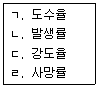
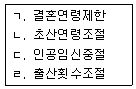

이용사 (2006-07-16 기출문제)
1과목: 임의 과목 구분
1. 세발을 하려고 한다. 다음중 어느 것을 가장 먼저해야 하는가?
- 헤어린스
- 헤어컨디셔너크림
- 헤어샴푸
- 헤어블리치
(정답률: 94%)

2. 다음 중 아이론을 사용하기에 가장 적합한 과정은?
- 헤어커트
- 샴푸
- 세트(정발)
- 헤어트리트먼트
(정답률: 70%)
3. 이용사를 바버(Barber)라고 한다. 이용사어원은 어디에서 유래된 것인가?
- 사람이름
- 병원이름
- 화장품 회사이름
- 가위이름
(정답률: 92%)
4. 우리나라의 이용사에 대한 설명중 맞는 것은?
- 우리나라의 이용의 발달은 대원군이 섭정할때이다.
- 우리나라에 이용이 시작된것은 1895년 김홍집내각 때이다.
- 우리나라에 이용이 시작된것은 해방이후이다.
- 우리나라에 이용이 시작된것은 한일합방이후이다.
(정답률: 97%)
5. 레이저(razor)커트시 1/2 이내로 모발끝을 테이퍼하였다. 다음중 사용된 기법이 아닌 것은?
- 스크럽춰 커팅
- 딥 테이퍼
- 노멀 테이퍼
- 레이저(razor)커팅
(정답률: 46%)
6. 염발제 또는 염발한 두발 세척물이 눈에 들어갔을 때 우선조치사항으로 가장 적합한 것은?
- 붕산수로 씻어낸다.
- 묽게 희석한 알코올로 씻어낸다.
- 깨끗한 물로 신속하게 씻어낸다.
- 묽게 희석한 크레졸 비누액으로 씻어낸다.
(정답률: 98%)
7. 두피 마사지의 방법이 아닌 것은?
- 경찰법
- 유연법
- 압박법
- 회전법
(정답률: 85%)
8. 다음중 원형탈모증으로 설명이 맞는 것은?
- 탈모 부분이 둥글다
- 외부 자극에 의해 발생한다.
- 모발이 길이 방향으로 갈라진다.
- 모발이 전체적으로 고루 빠진다.
(정답률: 95%)
9. 안면 면도시 따뜻한 습포(물수건)을 사용하는주목적은?
- 손님의 긴장감을 풀어주기 위하여
- 피부의 탄력성을 높이기 위하여
- 수염과 피부를 유연하게 만들기 위하여
- 피부의 노폐물을 제거하기 위하여
(정답률: 97%)
10. 해조류에 많이 함유되어 있는성분으로서 모발의 발모를 활발하게 하는 성분은?
- 요요드(I)
- 철(Fe)
- 칼슘(ca)
- 인(p)
(정답률: 57%)
11. 맨 처음 두발을 염색할때는 반드시 염색약의두피에 대한 부작용 여부를 시험하여야 하는데 그 적당한 부위는?
- 손바닥 가장 자리
- 얼굴이나 두피
- 손등이나 팔등
- 귀 뒤부분 또는 팔 안쪽부분
(정답률: 94%)
12. 헤어드라이어 사용시 건조한 두발을과도하게 드라이를 하였을 경우 일어날수있는현상으로 가장 적합한것은?
- 비듬이 없어진다.
- 두발에 수분이 부족되어 백발화가 촉진된다.
- 윤기가 없어지며 두발이 갈라진다.
- 피부의 각질층을 자극하여 피부의분비기능을 왕성하게 한다.
(정답률: 84%)
13. 다음중 착강가위의 설명으로 옳은 것은?
- 협신부는 연강이며 날 부분은 특수강으로 되어있다.
- 협신부와 날부분이 모두 특수강으로 되어있다.
- 협신부와 날부분이 모두 연강으로 되어 있다.
- 협신부은 특수강이며 날 부분은 연강으로 되어있다.
(정답률: 59%)
14. 두발이 있는 후두부 하단부 중앙에 직경 1cm의둥근 흉터가 있으면 어떻게 조발을하여야 하는가? (단. 목의 둘레가 13인치.목은 긴 형)
- 흉터가 있는곳까지 바리깡으로 조발하고 흉터하단은 면도로 처리한다.
- 흉터가 보이지않도록 길게조발하여 흉부를 가려준다
- 흉부 양옆의 머리를 3mm로 조발하며 흉터는 염색약으로 처리한다.
- 흉터의 유무에 상관하지 않는다.
(정답률: 82%)
15. 클리퍼(바리깡)에 관한 설명으로 틀린 것은?
- 클리퍼의 핸들부위는 강철로 되어있어도 상관없다.
- 클리퍼의 날부위는 주철로 되어 있어야 좋다.
- 날을 위에서 보았을때 윗날과밑날이 똑같아야 좋다.
- 날을 위에서 보았을때,윗날과밑날이 똑같이 겹쳐 있어야 좋다.
(정답률: 30%)
16. 아이론 웨이브시술에 대한 설명중 틀린 것은?
- 머리카락이 부드러운 사람에게는 정상적인 두발보다 시술온도를 높게 해야한다.
- 아이론으로 종이를 집어서 타지 않을 정도의온도가 되어야 한다.
- 프랑스의 마셀이 창안했다.
- 아이론의 온도가 110~130℃이다.
(정답률: 91%)
17. 손님의 얼굴형이 긴 얼굴(또는 좁은 얼굴)일때 얼굴에 가장 조화가 되는 두발형을 얻을수 있는 가르마는?
- 6:4의 가르마
- 8:2의 가르마
- 5:5의 가르마
- 7:3의 가르마
(정답률: 73%)
18. 조발 시술시 양발의 적당한 거리는?
- 편리한 거리로 한다.
- 주먹만한 거리가 이상적이다.
- 어깨넓이의 거리가 이상적이다.
- 두발을 모두 모아 차렷자세로 한다.
(정답률: 75%)
19. 정발시 두발에 포마드를 바르는 방법에대한 설명중 가장 적합한 것은?
- 손가락 끝으로만 발라야 한다.
- 두발의 표면만을 바르도록 해야 한다.
- 시술순서는 우측두부,좌측두부,후두부순으로 한다.
- 포마드를 바를때 머리(두부)가 흔들리지 않도록 해야 한다.
(정답률: 71%)
20. 두부처리시 사용하는 헤어토닉의 작용에 대한 설명 중 틀린 것은?
- 두부를 청결하게 한다.
- 가려움이 없어진다.
- 비듬의 발생을 막는다.
- 두피의 혈액순환은 양호해지나 모근은 약해진다.
(정답률: 92%)
2과목: 임의 과목 구분
21. 공중보건학의 정의로 가장 적합한 것은?
- 질병예방.생명연장,질병치료에 주력하는기술이며 과학이다.
- 질병예방,생명유지,조기치료에 주력하는 기술이며 과학이다.
- 질병의 조기발견,조기예방,생명연장에 주력하는 기술이 이며 과학이다.
- 질병예방,생명연장,건강증진에 주력하는 기술이며 과학이다.
(정답률: 79%)
22. 군집독의 원인을 가장 잘 설명한 것은?
- O2의 부족
- 공기의 무리 화학적 제조성의 악화
- CO2의 증가
- 고온다습한 환경
(정답률: 44%)
23. 다음중 콜레라에 관한 설명으로 잘못된 것은?
- 검역질병으로 검역기간으로 120시간을 초과할수없다.
- 수인성 전염병으로 경구전염된다.
- 제1군 법정전염병이다.
- 예방접종은 생균백신(vaccine)을 사용한다.
(정답률: 33%)
24. 다음중 소독되지 아니한 면도기를 사용했을때 가장 전염위험성이 높은것은?
- 간염
- 결핵
- 이질
- 콜레라
(정답률: 68%)
25. 다음중 산업재해의 지표로 주로 사용되는것을 전부 고른 것은?

- ㄱ.ㄴ.ㄷ
- ㄱ.ㄷ
- ㄴ.ㄹ
- ㄱ.ㄴ.ㄷ.ㄹ
(정답률: 13%)
26. 일반적으로 공기중 이산화탄소(CO2)는 약 몇%를 차지 하고 있는가?
- 0.03%
- 0.3%
- 3%
- 13%
(정답률: 27%)
27. 조명을 할때 눈의 보호를 위하여 가장 좋은 방법은?
- 직접조명
- 간접조명
- 반직접조명
- 반간접조명
(정답률: 89%)
28. 이따이이따이병의 원인물질로 주로 음료수를 통해 중독 되며,구토,복통,신장장애, 골연화증을 일으키는 유해금속 물질은?
- 비소
- 카드뮴
- 납
- 다이옥신
(정답률: 62%)
29. 비말전염과 가장관계 있는 사항은?
- 영양
- 상처
- 피로
- 밀집
(정답률: 74%)
30. 다음중 가족계획에 포함되는 것은?(오류 신고가 접수된 문제입니다. 반드시 정답과 해설을 확인하시기 바랍니다.)

- ㄱ.ㄴ.ㄷ
- ㄱ.ㄷ
- ㄴ.ㄹ
- ㄱ.ㄴ.ㄷ.ㄹ
(정답률: 50%)
31. 다음 중 방역용 석탄산수의 알맞은 사용 농도는?
- 1%
- 3%
- 5%
- 70%
(정답률: 79%)
32. 손소독에 이용되는 알콜의 농도로 가장 적당한 것은?
- 3%
- 30%
- 50%
- 70%
(정답률: 73%)
33. 다음중 할로겐계에 속하지 않는것은?
- 치아염소산나트륨
- 표백분
- 석탄산
- 요오드액
(정답률: 40%)
34. 다음중 소독약품의 살균력 측정시험에서 지표로서 주로 사용하는 것은?
- 크레졸
- 석탄산
- 알콜
- 승홍
(정답률: 65%)
35. 혈청이나 약제,백신등 열에 불안정한 액체의 멸균에 주로 이용되는 방법은?
- 초음파멸균법
- 방사선멸균법
- 초단파멸균법
- 여과멸균법
(정답률: 60%)
36. 다음중 소독 실시에 있어 수증기를 동시에 혼합하여 사용할 수 있는 것은?
- 승홍수 소독
- 포르말린수 소독
- 석회수 소독
- 석탄산수 소독
(정답률: 50%)
37. 70%의 희석 알콜 2ℓ를 만들려면 무수알콜(알콜원액)몇 ㎖가 필요한가?
- 700㎖
- 1.400㎖
- 1.600㎖
- 1.800㎖
(정답률: 85%)
38. 에틸렌 옥사이드(Ethylene oxide)가스의 설명으로 적합하지 않은 것은?
- 50~60 ℃의 저온에서 멸균된다.
- 멸균후 보존기간이 길다.
- 비용이 비교적 비싸다.
- 멸균완료 후 즉시 사용 가능하다.
(정답률: 32%)
39. 고압증기 멸균법의 압력과 처리시간이 틀린것은?
- 10 LB(파운드)에서 30분
- 15 LB(파운드)에서 20분
- 20 LB(파운드)에서 15분
- 30 LB(파운드)에서 3분
(정답률: 70%)
40. 고무장갑이나 플라스틱의 소독에 가장 적합한것은?
- E.O 가스 멸균법
- 고압증기 멸균법
- 자비 소독법
- 오존 멸균법
(정답률: 32%)
3과목: 임의 과목 구분
41. 멜라닌의 설명으로 옳지 않은 것은?
- 멜라닌생성세포는 신경절에서 유래하는 세포로써 정신적 인자와도 연관성이 있다.
- 멜라닌 형성자극 호르몬(MSH)EH 멜라닌형성에 촉진제 역할을 한다.
- 색소생성세포의 수는 인종간의 차이가 크다.
- 임신 중에 신체 부위별로 색소가 짙어지기도 하는데 MSH가 왕성하게 분비되기 때문이다.
(정답률: 19%)
42. 피부의 색소침착의 증상이 아닌 것은?
- 기미
- 주근깨
- 백반증
- 검버섯
(정답률: 73%)
43. 다음중 알레르기성 접촉 피부염을 가장 많이 일으키는 금속 성분은?
- 금
- 은
- 동
- 니켈
(정답률: 74%)
44. 눈근육 주위 관리방법의 설명으로 옳지 않은것은?
- 아이메이크업 리무버를 사용하여 대상부위를 매우 섬세하게 클린싱해야한다.
- 눈부위 마사지는 약하고 부드럽게 행한다.
- 탄력을 재생시키는 목적으로 관리한다.
- 부은 눈부위는 혈액순환을 촉진시키기 위하여 스팀 타올을 이용한다.
(정답률: 61%)
45. 박하(peppermint)에 함유된 시원한 느낌의 혈액순환 촉진 성분은?
- 자이리톨(xylitol)
- 멘톨(menthol)
- 알코올(alcohol)
- 마조람 오일(majoram oil)
(정답률: 79%)
46. 건강한 손,발톱의 설명으로 틀린 것은?
- 바닥에 강하게부착되어야 한다.
- 단단하고 탄력이 있어야 한다.
- 윤기가 흐르며 노란색을 띄어야 한다.
- 아치모양을 형성해야 한다.
(정답률: 74%)
47. 비타민 C가 피부에 미치는영향으로 틀린 것은?
- 멜라닌 색소 생성억제
- 광선에 대한 저항력 약화
- 모세혈관의 강화
- 진피의 결체조직 강화
(정답률: 50%)
48. 무좀이 있는 고객의 발관리에는 다음중 어떤비누를 선택하는것이 가장 좋은가?
- 향이 있는 비누
- 항균성분의 비누
- 거품이 많이 나는 비누
- 고체비누
(정답률: 90%)
49. 투명층은 인체의 어떤부위에 가장 많이 존재하는가?
- 얼굴.목
- 팔,다리
- 가슴,등
- 손바닥,발바닥
(정답률: 93%)
50. 임신중 알코올 섭취에 관해 틀린 것은?
- 임신중 알코올섭위는 태아성장과 건강상태에 나쁜 영향을 미친다.
- 알코올은 직접 태아에게 독성효과를 나타내지 않는다.
- 알코올은 태아 성장지연,두뇌및 신경발달에 영향을 미친다.
- 임신중의 어머니의 음주는 태아가 성장후 성인이 되어서도 알코올중독자가 되기 쉽도록 한다.
(정답률: 66%)
51. 영업소 출입.검사 관련공무원이 영업자에게 제시해야하는 것은?
- 주민등록증
- 위생검사 통지서
- 위생감시 공무원증
- 위생검사 기록부
(정답률: 59%)
52. 일부시설의 사용중지 명령을 받고도 그 기간주에 그 시설을 사용한 자에 대한 벌칙은?
- 3년이하의 징역 또는 3천만원 이하의벌금
- 2년이하의 징역 또는 2백만원 이하의벌금
- 1년이하의 징역 또는 1천만원 이하의벌금
- 5백만원 이하의 벌금
(정답률: 66%)
53. 공중위생감시원을 둘 수 없는 곳은?
- 특별시
- 광역시.도
- 시,군,구
- 읍,면,동
(정답률: 85%)
54. 위법한 공중위생영업소에 대한 폐쇄조치를 관계공무원 하여금 취하게 할수 있는 자는?
- 보건복지부장관
- 행정자치부장관
- 시.도지사
- 시장,군수,구청장
(정답률: 68%)
55. 위생교육에 관한 기록을 보관해야 하는기간은?
- 6개월 이상
- 1년 이상
- 2년 이상
- 3년이상
(정답률: 46%)
56. 영업소의 폐소명령을 받은 후 몇월이 지난 후에 영업을 할 수 있는가?
- 3월
- 9월
- 12월
- 6월
(정답률: 48%)
57. 다음중 청문을 실시하는 상항이 아닌 것은?
- 공중위생영업의 정지처분을 하고자 하는 경우
- 정신질환자 또는 간질병자에 해당되어 면허를 취소하고자 하는 경우
- 공중위생업의 일부시설의 사용중지및 영업소 폐쇄처분을 하고자 하는 경우
- 공중위생영업의 폐쇄처분 후 그기간이 끝난겨우
(정답률: 68%)
58. 공중위생업에 종사하는 자가 위생교육을 받지 아닌한 경우에 해당되는 벌칙은?
- 300만원 이하의 벌금
- 300만원 이하의 과태료
- 200만원 이하의 벌금
- 200만원 이하의 과태료
(정답률: 50%)
59. 이용사 또는 미용사의 면허를 받을 수 없는 자는?
- 간질병자
- 당뇨병환자
- 비활동성B형 간염자
- 비전염성 피부질환자
(정답률: 78%)
60. 과태료 처분이 부당하여 이의를제기할수있는 기간은?
- 15일 이내
- 30일 이내
- 2월 이내
- 3월 이내
(정답률: 56%)